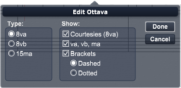

Double-click on an ottava sign in the Score View to open the Edit Ottava dialog box.

You can move the Edit Ottava dialog box around the desktop by dragging its title bar.
MIDI playback recognizes ottava markings and transposes notes accordingly.
The left half of the dialog box has three radio buttons where you can select the type of ottava sign you wish to insert:
- 8va. Select this type to insert an ottava sign over the selected notes. An 8va ottava sign indicates that notes under the sign are to be played one octave higher than written.
- 8vb. Select this type to insert an ottava sign under the selected notes. An 8vb ottava sign indicates that notes over the sign are to be played one octave lower than written.
- 15ma. Select this type to insert an ottava sign over the selected notes. A 15ma ottava sign indicates that notes under the sign are to be played two octaves higher than written.
The right half of the dialog box has a series of check boxes and radio buttons that you use to determine the appearance of the inserted ottava sign:
- Courtesies (8va). If an ottava sign extends across more than one line, checking this option causes a “courtesy” mark to be placed in parentheses at the beginning of each additional line.
- va, vb, ma. Checking this option places the va, vb, or ma indications after the transposition number in the inserted ottava sign.
- Brackets. Checking this option places a bracket after the ottava sign that extends all the way to the end of the selected region, where it ends in a down stroke to indicate the end of the passage.
Use brackets when an ottava sign extends over more than one note. If your ottava sign applies to only a single note, do not check the brackets option.
There are two types of brackets: Dashed and Dotted. Select the dashed option if you want your bracket to be a dashed line. Select the dotted option if you want your bracket to be a dotted line.